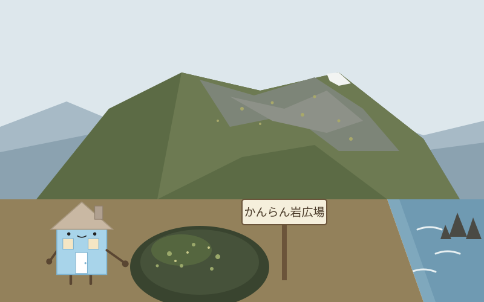
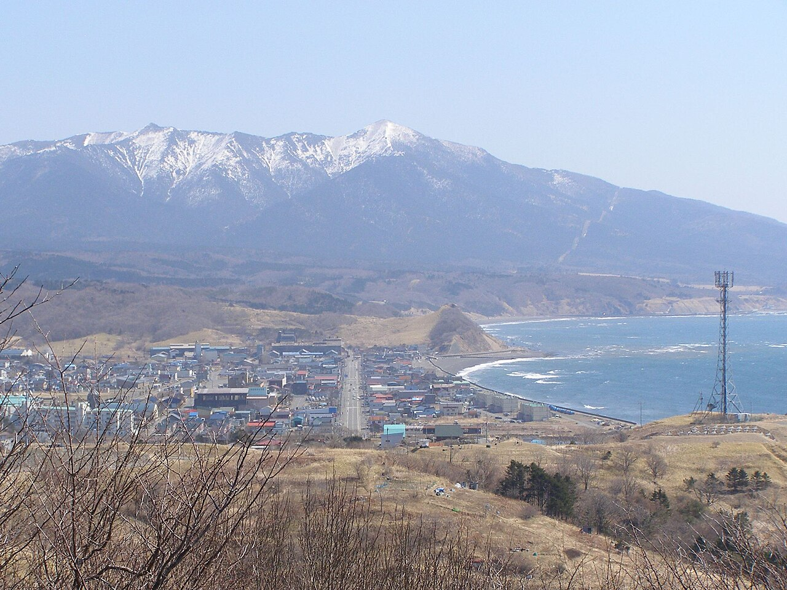

Day 16：様似町

役場の前に、大きな石があった。様似町役場の前のかんらん岩広場。黒緑色の岩に手を置くと、ひんやりと冷たかった。表面にはオリーブ色の小さな粒が光っている。かんらん岩。地球のずっと奥、マントルから来た石だという。家である私は、いつも地面の上に立っている。けれどここでは、地面そのものが地球の中身だった。
ここへは新ひだか町から来た。静内駅前9時20分発の道南バスで浦河へ向かい、浦河でJR北海道バスの日勝線に乗り換えた。日高振興局前12時19分発のバスで、様似営業所に12時58分に着いた。国道235号を東へ走るあいだ、牧場の柵がだんだん途切れて、海が近づいてきた。様似駅はかつて日高本線の終点だった。2021年に鵡川から様似のあいだが廃止されて、バスがその代わりをしている。
アポイ岳は標高810.5メートル。日高山脈の支稜線の南西の端にある、かんらん岩でできた山だ。約1300万年前、二つの大陸プレートがぶつかったとき、地下のマントルの一部が突き上げられるようにして地上に出たものだという。かんらん岩からできた土には、ニッケルやマグネシウムが多く含まれていて、木が生えにくい。だから標高810メートルしかないのに、約80種の高山植物が育ち、そのうち20種近くがここだけの固有種だ。1952年に国の特別天然記念物になり、2008年に日本ジオパーク、2015年にユネスコ世界ジオパークに認定された。町全体がジオパークになっている。

山の名前はアイヌ語のアペオイ、「火・ある・ところ」が由来だという。むかし、シカの豊猟を願って山頂に祭壇を設け、火を焚いて祈った伝説がある。火を住まわせた山だ。11月の山には花がない。登山道を登るのはやめて、麓から見上げることにした。海岸には親子岩やソビラ岩といった奇岩が並んでいる。約1700万年前、マグマが冷えて固まってできた岩で、アイヌの伝説も残っている。夕陽の名所だという。海の恵みは日高昆布。この町の昆布は、ジオパークの大地の恵みとして知られている。
家は、自分の基礎の下をふだん見ない。土の下に何があるか、考えたことがなかった。ここでは、下にあるはずのものが表に出て、町なかに置かれている。私の壁も屋根も、いつかは土に還る。でもこの石は、1300万年、そのままここにある。触れた手の冷たさが、しばらく残った。家もまた、見えない下のものに支えられているのだと、石に教えてもらった気がした。
出典：Wikipedia「アポイ岳」「様似町」、アポイ岳ジオパーク公式サイト「アポイ岳ジオパーク」「様似八景コース」、洞爺湖有珠山ジオパーク推進協議会『北の交差点』Vol.26、NAVITIME「静内本町から浦河高校前 バス時刻表（静内-浦河）」「日高振興局前から様似営業所 バス時刻表（日勝線）」、道南バス「主要停留所時刻表」（2026-11-16）。
💬 コメント